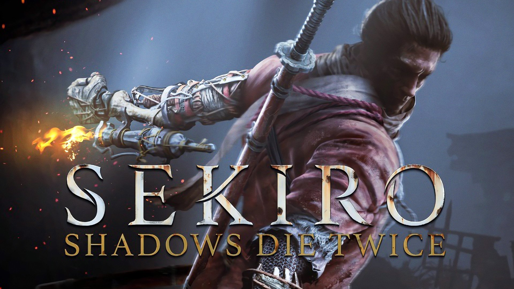
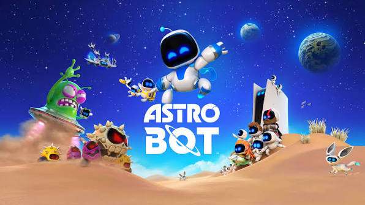
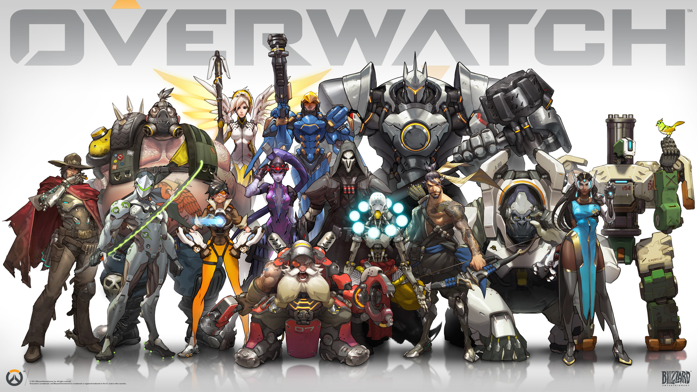
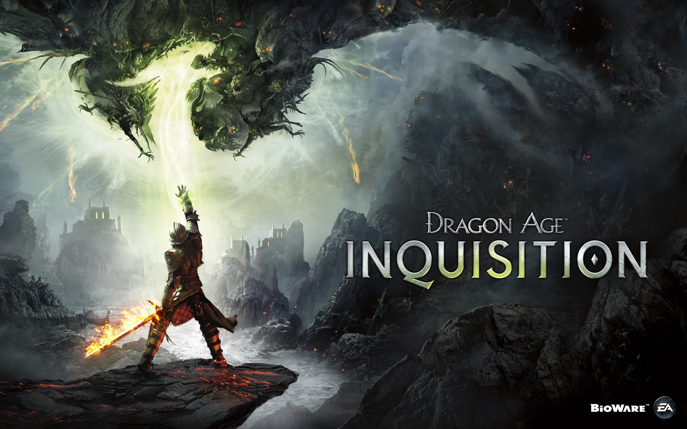
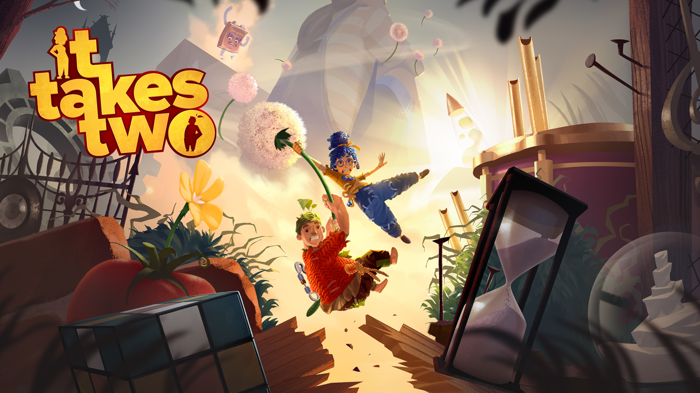

Xếp hạng
1.Elden ring
Elden Ring là một trong những tựa game hành động nhập vai nổi bật, được biết đến với thế giới mở rộng lớn, hệ thống chiến đấu thử thách và nhiều khu vực để người chơi khám phá. Trò chơi đưa người chơi vào vùng đất Lands Between, nơi chứa đựng nhiều bí ẩn, nhân vật và những trận chiến nguy hiểm.
Gameplay của Elden Ring tập trung vào khám phá, chiến đấu và phát triển nhân vật. Người chơi có thể sử dụng nhiều loại vũ khí, phép thuật và kỹ năng khác nhau để xây dựng phong cách chiến đấu riêng. Các trận đấu với boss có độ thử thách cao, yêu cầu người chơi quan sát, né tránh và lựa chọn thời điểm tấn công hợp lý.

2.The Witcher 3: Wild Hunt
The Witcher 3: Wild Hunt là một tựa game hành động nhập vai thế giới mở nổi tiếng, đưa người chơi vào vai Geralt of Rivia, một thợ săn quái vật chuyên nghiệp. Trò chơi sở hữu thế giới rộng lớn với nhiều thành phố, vùng đất và nhiệm vụ để người chơi tự do khám phá.
Gameplay kết hợp giữa chiến đấu, khám phá và phát triển nhân vật. Người chơi có thể sử dụng kiếm, phép thuật và nhiều loại vật phẩm khác nhau để đối đầu với quái vật và kẻ thù. Các lựa chọn trong quá trình chơi cũng có thể ảnh hưởng đến nhiệm vụ, nhân vật và diễn biến của câu chuyện.

3.The Last of Us Part II
The Last of Us Part I là một tựa game hành động phiêu lưu nổi tiếng, lấy bối cảnh thế giới hậu tận thế sau khi một đại dịch khiến xã hội sụp đổ. Người chơi theo chân Joel và Ellie trong hành trình vượt qua những khu vực nguy hiểm, đồng thời khám phá câu chuyện và mối quan hệ giữa hai nhân vật.
Gameplay kết hợp giữa chiến đấu, sinh tồn và khám phá. Người chơi có thể sử dụng nhiều loại vũ khí, thu thập vật phẩm và tận dụng môi trường xung quanh để vượt qua kẻ thù. Trò chơi cũng chú trọng vào cốt truyện, tạo nên những tình huống căng thẳng và nhiều cảm xúc trong suốt hành trình.

4.Clair Obscur: Expedition 33
Clair Obscur: Expedition 33 là một tựa game nhập vai theo lượt với bối cảnh giả tưởng độc đáo. Người chơi theo chân các thành viên của Expedition 33 trong hành trình tìm cách ngăn chặn Paintress, một nhân vật bí ẩn có khả năng khiến con người biến mất.
Gameplay kết hợp giữa chiến đấu theo lượt và các yếu tố hành động thời gian thực. Người chơi có thể điều khiển nhiều nhân vật, sử dụng kỹ năng và phối hợp đội hình để đối đầu với những kẻ thù khác nhau. Trò chơi cũng nổi bật với thế giới nghệ thuật ấn tượng, cốt truyện sâu sắc và hệ thống chiến đấu đòi hỏi người chơi phải tính toán chiến thuật.

5.God of War
God of War là một tựa game hành động phiêu lưu nổi tiếng, kể về hành trình của Kratos và con trai Atreus trong thế giới thần thoại Bắc Âu. Câu chuyện tập trung vào cuộc hành trình của hai cha con, đồng thời khám phá quá khứ và những thử thách mà họ phải đối mặt.
Gameplay kết hợp giữa chiến đấu, khám phá và giải đố. Người chơi có thể sử dụng Rìu Leviathan, khiên và nhiều kỹ năng khác nhau để chiến đấu với quái vật và các vị thần. Trò chơi cũng có hệ thống nâng cấp trang bị và kỹ năng, giúp người chơi phát triển phong cách chiến đấu của mình.

6.Sekiro: Shadows Die Twice
Sekiro: Shadows Die Twice là một tựa game hành động phiêu lưu lấy bối cảnh Nhật Bản thời kỳ Sengoku. Người chơi vào vai một shinobi được giao nhiệm vụ bảo vệ người chủ của mình và bước vào hành trình đối đầu với nhiều kẻ thù nguy hiểm.
Gameplay tập trung vào đỡ đòn, phản công và phá vỡ tư thế của đối thủ thay vì chỉ dựa vào việc gây sát thương. Người chơi có thể sử dụng thanh kiếm, cánh tay giả với nhiều công cụ khác nhau và khả năng hồi sinh để vượt qua những trận chiến đầy thử thách.

7.Baldur's Gate 3
Baldur's Gate 3 là một tựa game nhập vai lấy bối cảnh thế giới giả tưởng Forgotten Realms. Người chơi sẽ tạo nhân vật của riêng mình và bắt đầu hành trình cùng những người đồng đội với những câu chuyện và mục tiêu khác nhau.
Gameplay tập trung vào chiến đấu theo lượt, khám phá và lựa chọn. Người chơi có thể tự do đưa ra quyết định trong các tình huống, sử dụng phép thuật, kỹ năng và phối hợp với đồng đội để vượt qua các trận chiến. Những lựa chọn trong quá trình chơi có thể ảnh hưởng đến nhiệm vụ, nhân vật và diễn biến của câu chuyện.

8.The Legend of Zelda: Breath of the Wild
The Legend of Zelda: Breath of the Wild là một tựa game hành động phiêu lưu thế giới mở, đưa người chơi vào vương quốc Hyrule. Người chơi vào vai Link và bắt đầu hành trình khám phá thế giới, tìm hiểu những bí ẩn trong quá khứ và đối đầu với những thế lực nguy hiểm.
Gameplay tập trung vào khám phá, chiến đấu và giải đố. Người chơi có thể tự do di chuyển, leo núi, sử dụng nhiều loại vũ khí và tận dụng môi trường xung quanh để vượt qua thử thách. Thế giới mở rộng lớn cho phép người chơi lựa chọn cách tiếp cận và khám phá theo nhiều hướng khác nhau.

9.Astro Bot
Astro Bot là một tựa game platformer đầy màu sắc, đưa người chơi vào những thế giới đa dạng cùng chú robot Astro. Trò chơi nổi bật với thiết kế màn chơi sáng tạo, đồ họa dễ thương và nhiều nhân vật quen thuộc trong lịch sử PlayStation.
Gameplay tập trung vào di chuyển, khám phá và vượt chướng ngại vật. Người chơi có thể sử dụng nhiều khả năng đặc biệt của Astro để vượt qua các thử thách, thu thập vật phẩm và giải cứu những người bạn robot. Mỗi màn chơi mang đến những cơ chế và thử thách khác nhau.

10.Overwatch
Overwatch là một tựa game bắn súng góc nhìn thứ nhất kết hợp nhiều yếu tố của thể loại hero shooter. Người chơi có thể lựa chọn nhiều nhân vật khác nhau, mỗi nhân vật sở hữu kỹ năng và phong cách chiến đấu riêng biệt.
Gameplay tập trung vào đấu đội, phối hợp và sử dụng kỹ năng. Người chơi cần lựa chọn nhân vật phù hợp, phối hợp với đồng đội và tận dụng kỹ năng để hoàn thành mục tiêu của trận đấu. Các vai trò như Tank, Damage và Support tạo nên nhiều cách xây dựng đội hình khác nhau

11.Dragon Age: The Veilguard
Dragon Age: The Veilguard là một tựa game nhập vai hành động lấy bối cảnh thế giới giả tưởng Thedas. Người chơi vào vai Rook và tập hợp một nhóm đồng đội với những khả năng, tính cách và câu chuyện riêng để đối mặt với các mối đe dọa đang xuất hiện.
Gameplay tập trung vào chiến đấu, khám phá và phát triển nhân vật. Người chơi có thể tùy chỉnh kỹ năng, trang bị và lựa chọn đồng đội để tạo ra phong cách chiến đấu phù hợp. Các cuộc hội thoại và lựa chọn trong hành trình cũng ảnh hưởng đến mối quan hệ với các nhân vật khác.

12.It Takes Two
It Takes Two là một tựa game phiêu lưu hành động được thiết kế dành cho hai người chơi, kể về hành trình của Cody và May sau khi họ biến thành những con búp bê. Cả hai phải cùng nhau vượt qua nhiều thử thách để tìm cách trở lại hình dạng ban đầu.
Gameplay tập trung vào phối hợp giữa hai người chơi, giải đố và vượt chướng ngại vật. Mỗi người thường có những khả năng riêng và phải kết hợp với nhau để vượt qua các màn chơi. Trò chơi liên tục thay đổi cơ chế gameplay, mang đến nhiều thử thách và tình huống khác nhau.

Quay lại Trang chủ Tiếp theo